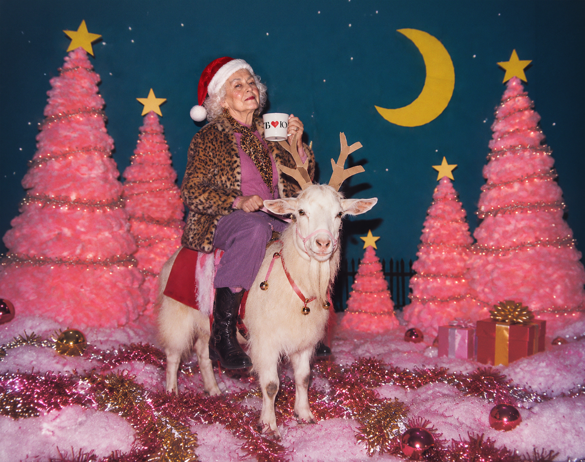
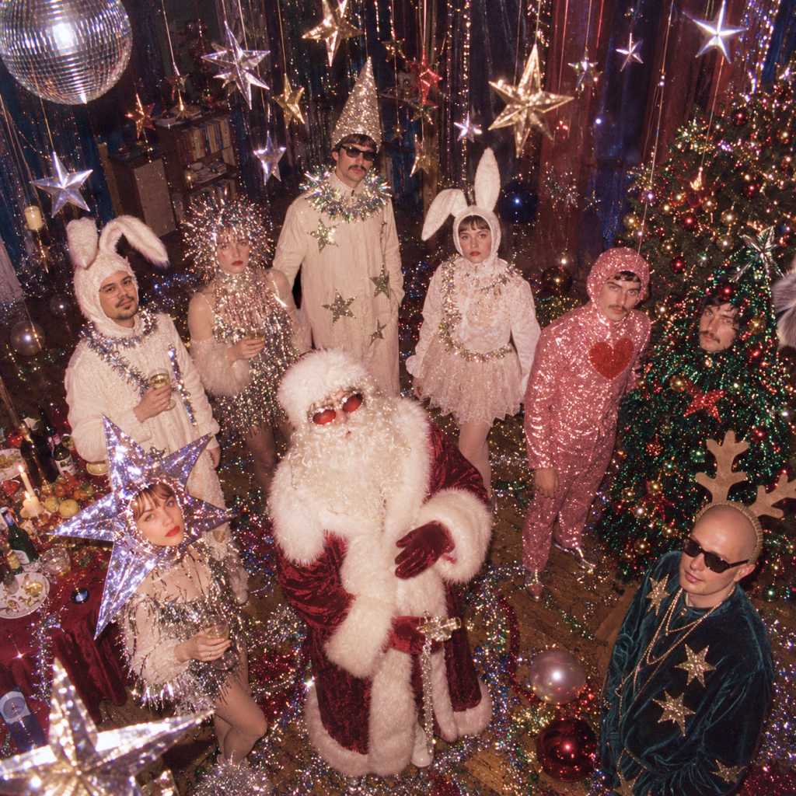
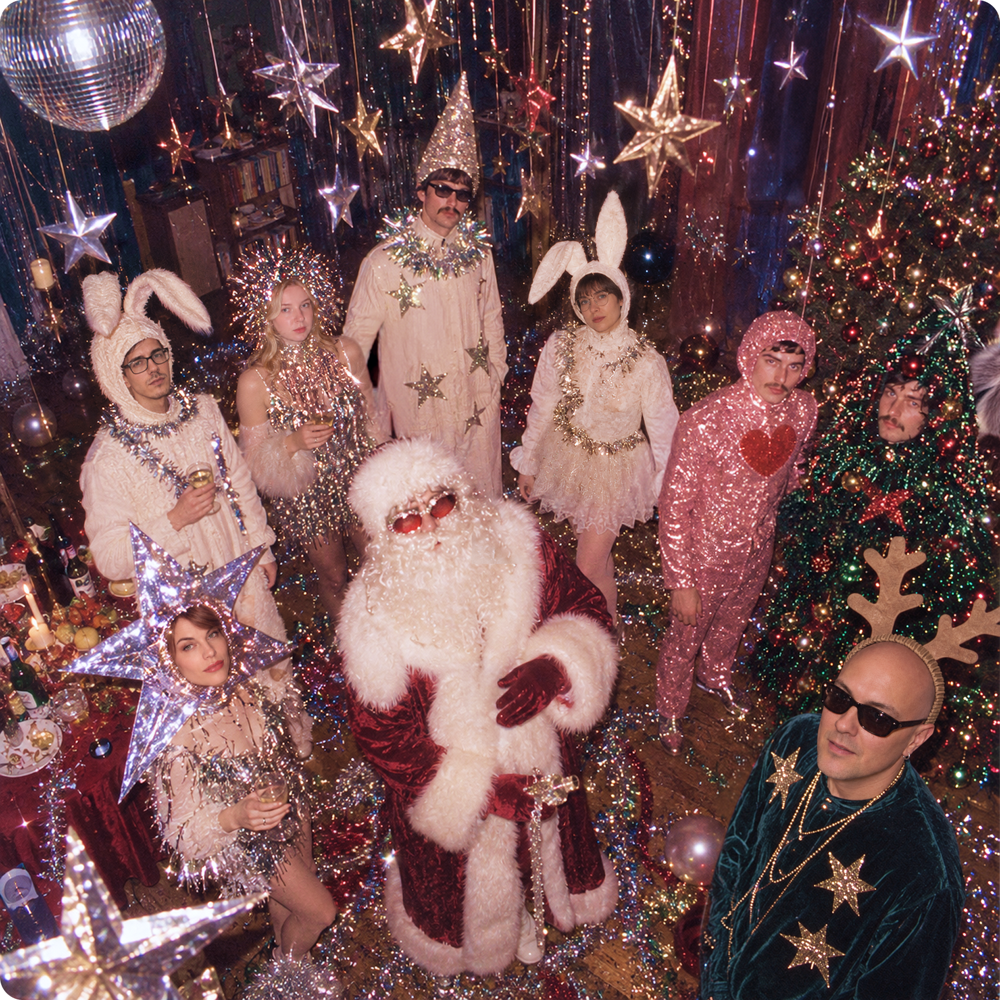
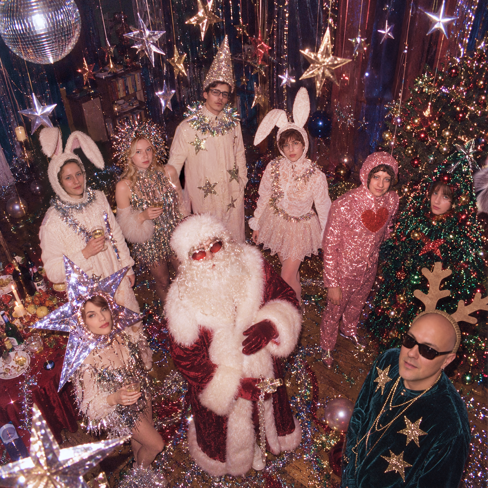
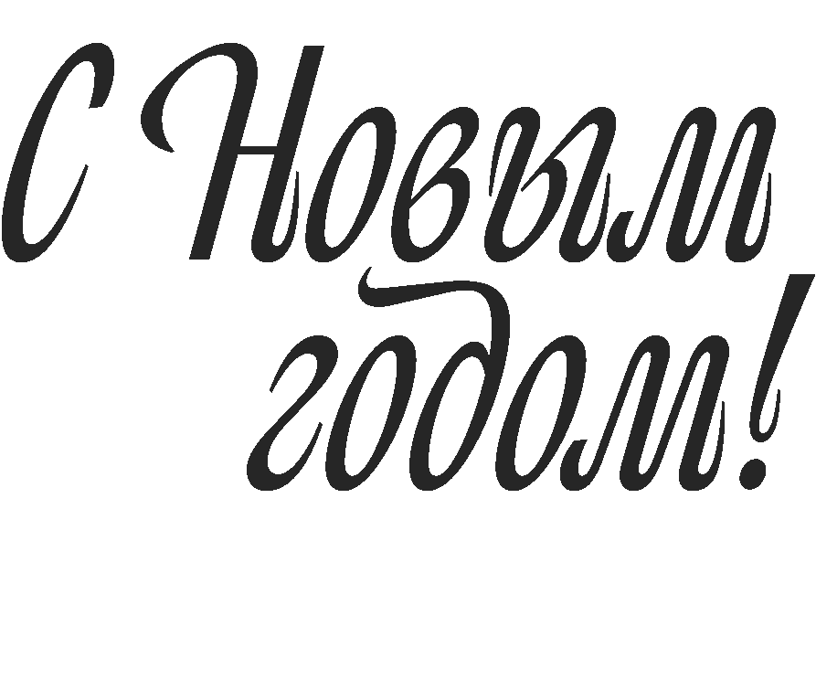
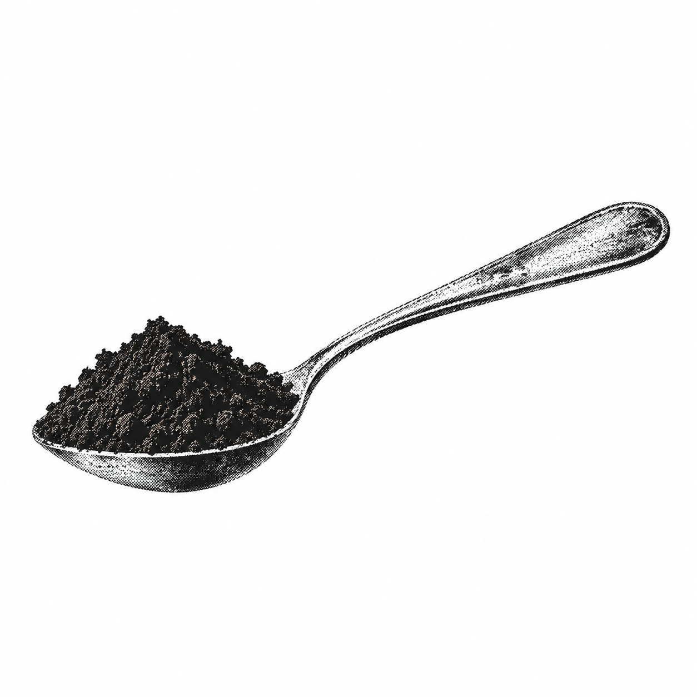
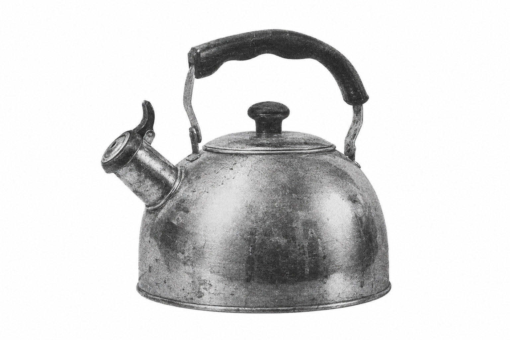
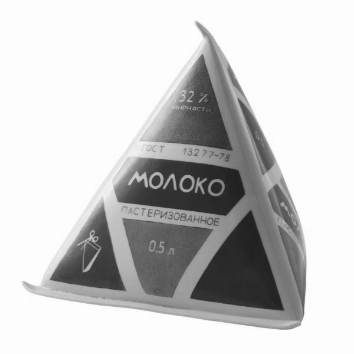
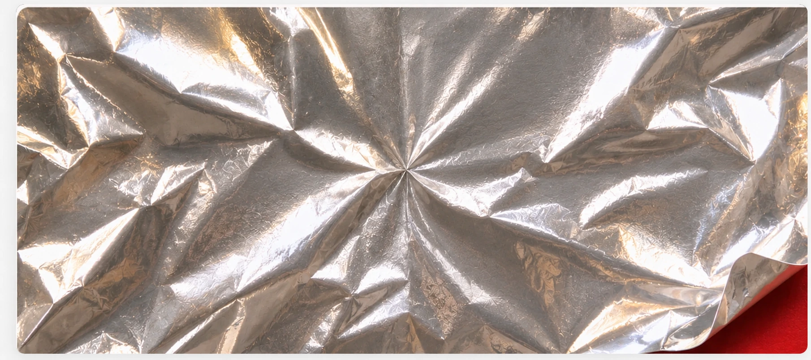

добро пожаловать
В мире опять происходит не пойми что. Новости напоминают страшилки, планы меняются быстрее, чем мы успеваем их строить, а предсказать даже следующую неделю становится непросто.
Поэтому мы решили бросить попытки разобраться в будущем и довериться кофейной гуще. В конце концов, чем она хуже остальных прогнозов?



Но, прежде —

Пусть в 2027-м будет больше классных идей, неожиданных открытий и поводов для радости. И поменьше поводов сходить с ума. Хотя без маленьких безумств тоже никуда!
Ну а теперь — погадаем!
Заваривайте кофе по нашей инструкции, а когда допьете,
попробуйте разглядеть в чашке своё будущее.
-

Положите в чашку объемом 250 мл две чайные ложки кофе с горкой.
-

Нагрейте воду до 93–95 °C. До кипения доводить не нужно.
-
Залейте кофе водой и не перемешивайте. Подождите две минуты.
Теперь перемешайте и дайте частицам кофе осесть на дно. -

Если любите кофе с молоком, сливками или сиропом — добавьте их в самом конце.
Наслаждайтесь. И не спешите: будущее подождёт.
Теперь, когда в чашке
появился
загадочный рисунок...
Самое время узнать, что он означает. Присмотритесь к кофейной гуще,
найдите что-то похожее среди наших символов и прочитайте предсказание.
А вот что мы можем
предсказать точно!
